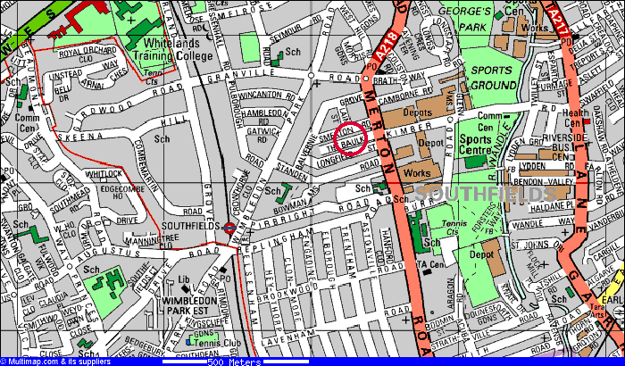

Heathrow - Piccadilly Line bis Earl's Court, dort in District Line (West) nach Wimbledon einsteigen. Aussteigen in Southfields. Dauer ca. 1,5 Stunden, Kosten GBP 2.20 pro Richtung.
Gatwick - Zug bis Clapham Junction. Umsteigen in Bus 39 Richtung Putney Bridge. In Southfields aussteigen. Dauer ca. 1,5 Stunden, Kosten GBP 7.50 und GBP 0.70 pro Richtung. Angenehmer aber seltener: Zug Richtung Rugby, aber in West Brompton in District Line Richtung Wimbledon umsteigen und in Southfields aussteigen. Gleiche Dauer, aber Tube kostet GBP 1.20.
Stansted - Stansted Express bis Liverpool Street. Tube: Entweder in die Central Line (West) bis Notting Hill, District Line (West) bis Earl's Court falls nicht in Richtung Wimbledon, dort in die District Line nach Wimbledon umsteigen und in Southfields aussteigen. Oder: Circle Line (East) bis Gloucester Road, dort in District Line (West) nach Earl's Court und dann in die District Line (West) Richtung Wimbledon umsteigen und in Southfields aussteigen. Dauer ca. 2 Stunden, Kosten GBP 13.50 und GBP 2.20.
Stand der Preise vom 18. September 2001 - Mehr unter London Transport
Tube Map - siehe ebenfalls London Transport
Southfields
